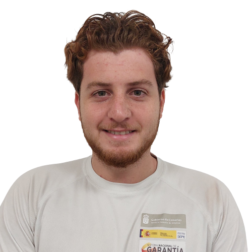
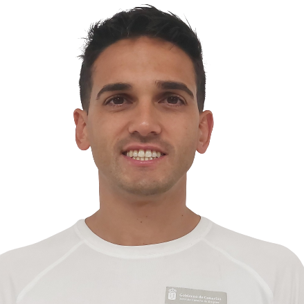
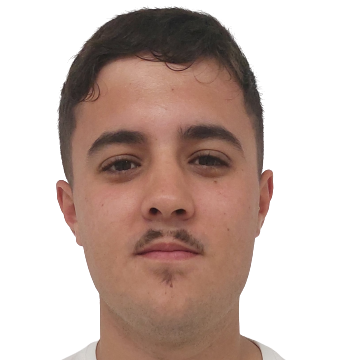

EQUIPO

Sofía

Samuel
Brenda
Tadeo
Andrés
Anabel
Alejandro
Isshane

David
Cristina

Joel
Adrián
Mariangela
El interés social de este proyecto reside en velar por la seguridad de los usuarios de zonas de baño público en espacios acuáticos naturales, de forma autónoma o integrado en un equipo de rescate y socorrismo, velando por la seguridad, previniendo que se produzcan situaciones potencialmente peligrosas realizando una vigilancia permanente y eficiente e interviniendo de forma eficaz ante un accidente o situación de emergencia.
Sofía
Samuel
Brenda
Tadeo
Andrés
Anabel
Alejandro
Isshane
David
Cristina
Joel
Adrián
Mariangela
El proyecto "Playas Seguras II" es un programa de formación en alternancia con el empleo en el que se
pretende que alumno-trabajador aprenda las habilidades, técnicas, y procesos propios de la profesión de
socorrista. Ello lleva aparejado la adquisición de la competencia de velar por la seguridad de los
usuarios de zonas de baño público en espacios acuáticos naturales, de forma autónoma o integrado en un
equipo de rescate y socorrismo, velando por la seguridad, previniendo que se produzcan situaciones
potencialmente peligrosas realizando una vigilancia permanente y eficiente e interviniendo de forma
eficaz ante un accidente o situación de emergencia.
Para lograr estos objetivos se habían seleccionado
en el municipio de Tías distintas unidades de trabajo o servicios vinculadas con el desempeño propio de
la profesión, donde los alumnos-trabajadores ejecutaran de manera real los contenidos teórico-prácticos
que conforman el certificado de profesionalidad.
Los servicios que se proponen realizar son :
a) Ejecutar técnicas específicas de natación
con eficacia y seguridad.
b) Prevenir accidentes o situaciones de emergencia en espacios
acuáticos naturales.
c)Rescatar a personas en caso de accidente o situación de emergencia en
espacios acuáticos naturales.
d) Asistir como primer interviniente en caso de accidente o
situación de emergencia .
e) Organizar y dar indicaciones a los visitantes de las playas
para que se cumplan las medidas COVID-19.
Los espacios que se han seleccionado para la realización de las Unidades de trabajo se detallan a continuación:
Unidad Playa Chica
Unidad Playa Los Pocillos
Unidad Playa Grande
Unidad Playa de Matagorda
Los destinatarios de los servicios del PFAE "Playas Seguras II" serán los usuarios de las playas, los turistas y la ciudadanía en general del Municipio de Tías.